Título:Layout
Define la estructura para una interfaz de usuario para una actividad o widget de una app
Se puede declarar un diseño de dos maneras:
Elementos de la Interfaz grafica en XML: Proporciona un vocabulario XML simple que coincide con las clases y subclases de vistas como las que usan para widgets y diseños.
Crear una instancia de elementos del diseño en tiempo de ejecución: Se puede crear objetos View y ViewGroup para manipular sus propiedades de forma programática
- View: Suele mostrar un elemento que el usuario puede ver y con el que puede interactuar. Además, suelen llamarse "widgets" y pueden ser una de las muchas subclases, como Button o TextView
- ViewGroup: Es un contenedor invisible que define la estructura de diseño de View y otros objetos ViewGroup. Además, se denominan generalmente "diseños" y pueden ser de muchos tipos que proporcionan una estructura diferente, como LinearLayout o ConstraintLayout.
Ventaja:
El vocabulario XML para declarar elementos de la interfaz de usuario sigue de cerca la estructura y la denominación de las clases y los métodos, en los que los nombres de los elementos coinciden con los nombres de las clases y los nombres de los atributos coinciden con los métodos.
Escribe en XML
Al usar vocabulario XML de Android se puede crear rápidamente diseños de Interfaz de Usuario y de los elementos de pantalla que contienen, de la misma manera que creas páginas web en HTML, con una serie de elementos anidados. Cada archivo de diseño debe contener exactamente un elemento raíz, que debe ser un objeto View o ViewGroup.
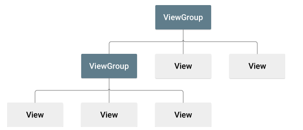Una vez que hayas definido el elemento raíz, puedes agregar widgets u objetos de diseño adicionales como elementos secundarios para crear gradualmente una jerarquía de vistas que defina tu diseño.
Ejemplo:
Diseño XML que usa un LinearLayout vertical para incluir una TextView y un Button:
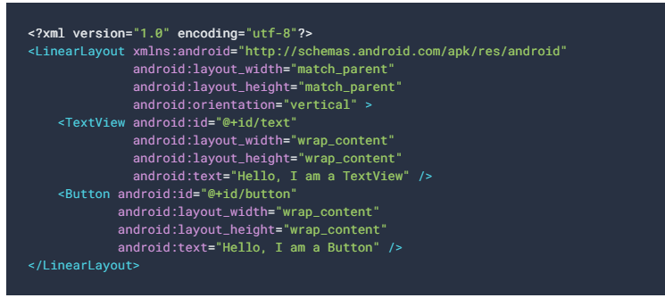Después de declarar tu diseño en XML, guarda el archivo con la extensión .xml en el directorio res/layout/ de tu proyecto de Android para que pueda compilarse correctamente.
Carga el recurso XML
Cuando compilas tu aplicación, cada archivo de diseño XML se compila en un recurso View. Debes cargar el recurso de diseño desde el código de tu aplicación, en la implementación de devolución de llamada Activity.onCreate(). Para eso, llama a setContentView() pasando la referencia a tu recurso de diseño en forma de R.layout.layout_file_name.
Ejemplo: Si tu diseño XML se guarda como main_layout.xml, se puede cargar de la misma manera:
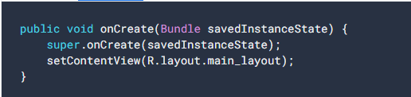El marco de trabajo de Android llama al método de devolución de llamada onCreate() en tu actividad cuando esta se lanza.
Atributos
Cada objeto View y ViewGroup admite su propia variedad de atributos XML. Por ejemplo, TextView admite el atributo textSize, existen atributos que se heredan de la clase raíz View (como el atributo id). Otros atributos se consideran "parámetros de diseño" y son atributos que describen ciertas orientaciones de diseño del objeto View, tal como lo define el objeto principal ViewGroup de ese objeto.
ID:
Cualquier objeto View puede tener un ID entero asociado para identificarse de forma única dentro del árbol, el ID se asigna normalmente en el archivo XML de diseño como una string del atributo id. Este es un atributo XML común para todos los objetos View (definido por la clase View).
La sintaxis de un ID dentro de una etiqueta XML es la siguiente
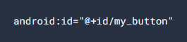Componentes
Al hacer referencia a un ID de recurso de Android, no necesitas el símbolo más, pero debes agregar el espacio de nombres de paquete android de la siguiente manera:
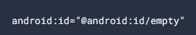Con el espacio de nombres de paquete android establecido, ahora hacemos referencia a un ID de la clase de recursos android.R
Para crear vistas y hacer referencia a ellas desde la aplicación, puedes seguir este patrón común:
1. Definir una vista o un widget en el archivo de diseño y asignarle un ID único:
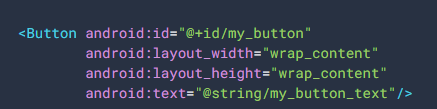2. Luego, crear una instancia del objeto View y capturarla desde el diseño (generalmente en el método onCreate()):
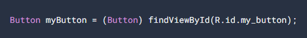Definir ID para objetos View es importante cuando se crea un RelativeLayout. En un diseño relativo, las vistas del mismo nivel pueden definir su diseño en función de otra vista del mismo nivel, que se identifica con un ID único.
Parámetros de diseño
Los atributos de diseño XML denominados layout_something definen parámetros de diseño para el objeto View que son adecuados para el objeto ViewGroup en el que reside.
Cada clase ViewGroup implementa una clase anidada que extiende ViewGroup.LayoutParams, contiene tipos de propiedad que definen el tamaño y la posición de cada vista secundaria, según resulte apropiado para el grupo de vistas.
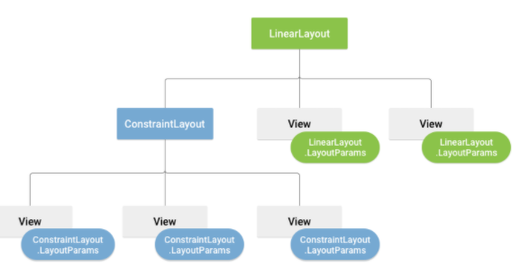
Todos los grupos de vistas incluyen un ancho y una altura (layout_width y layout_height), y cada vista debe definirlos. Muchos LayoutParams también incluyen márgenes y bordes opcionales.
Puedes especificar el ancho y la altura con medidas exactas, aunque probablemente no quieras hacerlo con mucha frecuencia. Generalmente, usarás una de estas constantes para establecer el ancho o la altura:
wrap_content: Indica a tu vista que modifique su tamaño conforme a los requisitos de este contenido
match_parent: Indica a tu vista que se agrande tanto como lo permita su grupo de vistas principal,
Importante: En general, no se recomienda especificar el ancho ni la altura de un diseño con unidades absolutas como píxeles, pero si el uso de medidas relativas como unidades de píxeles independientes de densidad (dp), wrap_content o match_parent porque ayudan a garantizar que la aplicación se muestre correctamente en dispositivos con pantallas de diferentes tamaños.
Posición del diseño
El formato de una vista es la de un rectángulo se divide en un par de coordenadas izquierda y superior y dos dimensiones, expresadas como un ancho y una altura. La unidad para la ubicación y las dimensiones es el píxel.
Es posible recuperar la ubicación de una vista al invocar los métodos getLeft() y getTop(). El primero muestra la coordenada izquierda, o X, del rectángulo que representa la vista. La segunda muestra la coordenada superior, o Y, del rectángulo que representa la vista. Ambos métodos devuelven la ubicación de la vista respecto de su elemento primario.
Tamaño, relleno y márgenes
El tamaño de una vista se expresa con un ancho y una altura. En realidad, una vista tiene dos pares de valores de ancho y altura.
El primer par se conoce como ancho medido y altura medida. Estas dimensiones definen cuán grande quiere ser una vista dentro de su elemento primario. Las dimensiones medidas se pueden obtener llamando a getMeasuredWidth() y a getMeasuredHeight().
El segundo par se conoce simplemente como ancho y altura, o, algunas veces, ancho de dibujo y altura de dibujo. Estas dimensiones definen el tamaño real de la vista en la pantalla en el momento de dibujarlas y después del diseño. Estos valores pueden ser diferentes del ancho y la altura medidos, pero no necesariamente. El ancho y la altura se pueden obtener llamando a getWidth() y getHeight().
Diseños comunes
Cada subclase de la clase ViewGroup proporciona una manera única de mostrar las vistas que anidas en ella. Aquí te mostramos algunos de los tipos de diseño más comunes integrados en la plataforma Android.
Diseño Lineal
Un diseño que organiza sus elementos secundarios en una sola fila horizontal o vertical. Si la longitud de la ventana supera la de la pantalla, crea una barra de desplazamiento.
Diseño Relativo
Te permite especificar la ubicación de los objetos secundarios en función de ellos mismos (el objeto secundario A la izquierda del objeto secundario B) o en función del elemento primario (alineado con la parte superior del elemento primario).
Vista web
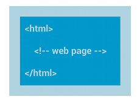Muestra páginas web.
Creación de diseños con un adaptador
Cuando el contenido de tu diseño sea dinámico o no sea predeterminado, puedes usar un diseño con la subclase AdapterView para completar el diseño con vistas durante el tiempo de ejecución. Una subclase de la clase AdapterView usa un Adapter para enlazar datos con su diseño. Adapter se comporta como intermediario entre la fuente de datos y el diseño AdapterView; Adapter recupera los datos (de una fuente como una matriz o una consulta a la base de datos) y convierte cada entrada en una vista que puedes agregar al diseño AdapterView.
Los diseños comunes respaldados por un adaptador incluyen:
Vista de lista
Muestra una sola lista de columnas desplazable.
Vista de cuadricula
Muestra una cuadrícula desplazable de columnas y filas.
Relleno de una vista del adaptador con datos
ArrayAdapter: Usa este adaptador cuando la fuente de datos sea una matriz. Según la configuración predeterminada, ArrayAdapter crea una vista para cada elemento de la matriz llamando a toString() en cada elemento y disponiendo los contenidos en una TextView.
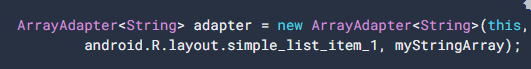Los argumentos para este constructor son los siguientes:
SimpleCursorAdapter: Usa este adaptador cuando tus datos provengan de un Cursor. Cuando uses SimpleCursorAdapter, debes especificar un diseño para cada fila en el Cursor y qué columnas de Cursor se deben insertar en qué vistas del diseño.
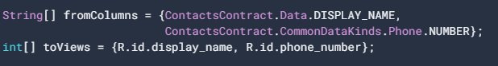Cuando crees una instancia del SimpleCursorAdapter, pasa el diseño que se debe usar para cada resultado, el Cursor que contiene los resultados y estas dos matrices:
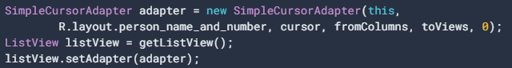 Luego, el SimpleCursorAdapter crea una vista para cada fila en el Cursor usando el diseño proporcionado al insertar cada elemento fromColumns en la vista toViews correspondiente.Cómo manejar eventos de clic
Puedes responder a eventos de clic en cada elemento de una AdapterView al implementar la interfaz AdapterView.OnItemClickListener.
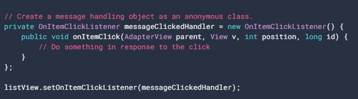Cómo crear una IU responsiva con ConstraintLayout
p>ConstraintLayout: Te permite crear diseños grandes y complejos con una jerarquía de vistas plana (sin grupos de vistas anidadas). Está disponible directamente desde las herramientas visuales del editor de diseño, ya que la API de diseño y el editor de diseño se crearon específicamente para funcionar en conjunto.
Descripción general de las restricciones
Se debe agregar al menos una restricción horizontal y una vertical. Cada restricción representa una conexión o alineación con otra vista, el diseño de nivel superior o una guía invisible. Cada restricción define la posición de la vista a lo largo del eje vertical u horizontal, por lo que cada vista debe tener un mínimo de una restricción para cada eje, aunque a menudo se necesitan más.
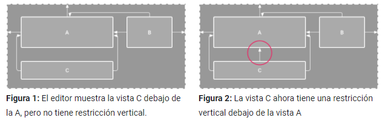
Cómo agregar ConstraintLayout a tu proyecto
Para usar ConstraintLayout en tu proyecto, sigue estos pasos:
1. Asegúrate de tener el repositorio maven.google.com declarado en el archivo build.gradle de nivel de módulo:
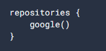2. Agrega la biblioteca como una dependencia en el mismo archivo build.gradle, como se muestra en el siguiente ejemplo. Ten en cuenta que la última versión puede ser diferente de la que se muestra en el ejemplo:
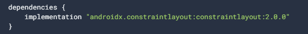3. En la barra de herramientas o notificación de sincronización, haz clic en Sync Project with Gradle Files.
Ya está todo listo para crear el diseño con ConstraintLayout.
ómo convertir un diseño
Para convertir un diseño existente en uno de ConstraintLayout, sigue estos pasos:
1. Abre el diseño existente en Android Studio y haz clic en la pestaña Design, en la parte inferior de la ventana del editor.
2. En la ventana Component Tree, haz clic con el botón derecho en el diseño y, luego, en Convert layout to ConstraintLayout.
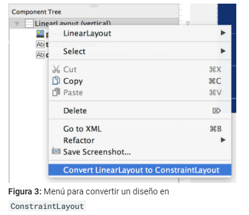Cómo crear un diseño nuevo
Para iniciar un archivo de diseño con restricciones nuevo, sigue estos pasos:
1. En la ventana Project, haz clic en la carpeta del módulo y, luego, selecciona File > New > XML > Layout XML.
2. Ingresa un nombre para el archivo de diseño y "androix.constraintlayout.widget.ConstraintLayout" en Root Tag.
3. Haz clic en Finish.
Cómo agregar o quitar una restricción
Para agregar una restricción, haz lo siguiente:
1. Arrastra una vista desde la ventana Palette hasta el editor.
Cuando agregas una vista en un ConstraintLayout, se muestra un cuadro de límite con controladores de cambio de tamaño cuadrados en cada esquina y controladores de restricciones circulares en cada lado.
2. Haz clic en la vista para seleccionarla.
3. Realiza alguna de las siguientes acciones:
Cuando crees restricciones, recuerda las siguientes reglas:
1. Cada vista debe tener al menos dos restricciones, una horizontal y una vertical.
2. Puedes crear restricciones solo entre un controlador de restricción y un punto de anclaje que compartan el mismo plano. Por lo tanto, un plano vertical (los lados izquierdo y derecho) de una vista puede limitarse solo a otro plano vertical; y las líneas de base solo pueden limitarse a otras líneas de base.
3. Cada identificador de restricción se puede usar para una sola restricción, pero es posible crear múltiples restricciones (desde diferentes vistas) en el mismo punto de anclaje.
Posición superior
Restringe el lado de una vista al borde correspondiente del diseño.
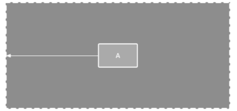Posición de orden
Define el orden de aparición de dos vistas, ya sea de manera horizontal o vertical.
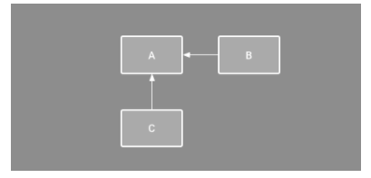Alineación
Alinea el borde de una vista con el mismo borde de otra vista.
También puedes seleccionar todas las vistas que quieres alinear y, luego, hacer clic en Align en la barra de herramientas para seleccionar el tipo de alineación.

Alineación de línea de base
Alinea la línea de base de texto de una vista con la línea de base de texto de otra.
Para crear una restricción de línea de base, haz clic con el botón derecho en la vista de texto que deseas restringir y, luego, haz clic en Show Baseline. Luego, haz clic en la línea de base de texto y arrástrala hasta otra línea de base.
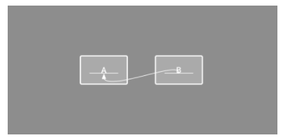Cómo aplicar una restricción a una guía
Puedes agregar una guía vertical u horizontal en la que sea posible restringir las vistas; la guía será invisible para los usuarios de la aplicación. Puedes colocar la guía dentro del diseño según las unidades de dp o porcentaje, en relación con el borde del diseño.Para crear una guía, haz clic en Guidelines en la barra de herramientas y, luego, en Add Vertical Guideline o Add Horizontal Guideline.
Arrastra la línea punteada para cambiar la posición y haz clic en el círculo que está en el borde de la guía a fin de activar o desactivar el modo de medición.
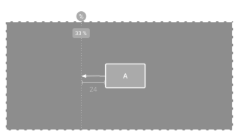Cómo aplicar una restricción a una barrera
Para crear una barrera, sigue estos pasos:
- Haz clic en Guidelines en la barra de herramientas y, luego, en Add Vertical Barrier o Add Horizontal Barrier.
- En la ventana Component Tree, selecciona las vistas que deseas dentro de la barrera y arrástralas hasta el componente de barrera.
- Selecciona la barrera en Component Tree, abre la ventana Attributes y, luego, configura la barrierDirection.
Ahora puedes crear una restricción desde otra vista hasta la barrera.
También puedes restringir a la barrera las vistas que están dentro de la barrera. De esta manera, puedes asegurarte de que todas las vistas de la barrera siempre estén alineadas entre sí, aunque no sepas cuál de las vistas será la más larga o la más alta.
También puedes incluir una guía dentro de una barrera a fin de garantizar una posición "mínima" de la barrera.
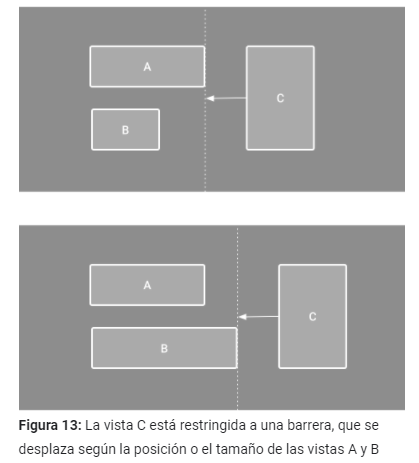Cómo ajustar el tamaño de la vista
Puedes usar los controladores de las esquinas para cambiar el tamaño de una vista, pero esta acción fija el tamaño dentro del código a fin de que la vista no cambie de tamaño para diferentes contenidos o tamaños de pantalla. Si quieres seleccionar un modo de tamaño diferente, haz clic en una vista y abre la ventana Attributes en el lado derecho del editor.
Cerca de la parte superior de la ventana Attributes, se encuentra el inspector de vistas, que incluye controles para varios atributos de diseño, como se muestra en la figura 14 (disponible solo para vistas en un diseño de restricciones).
Para cambiar la forma en que se calculan la altura y el ancho, haz clic en los símbolos que se indican con la leyenda 3 en la figura 14. Los símbolos representan el modo de tamaño de la siguiente manera (haz clic en el símbolo para alternar entre las distintas configuraciones):
- Fixed: Debes definir una dimensión específica en el cuadro de texto de abajo o cambiar el tamaño de la vista en el editor.
- Wrap Content: La vista se expande solo lo necesario para ajustarse a su contenido.
- Match Constraints: La vista se expande tanto como sea posible para ajustarse a las restricciones de cada lado (tras restar los márgenes de la vista). Sin embargo, puedes modificar ese comportamiento con los siguientes atributos y valores (estos atributos solo tienen efecto cuando estableces que el ancho de la vista coincida con las restricciones):
- layout_constraintWidth_default
- spread: Expande la vista tanto como sea posible para ajustarla a las restricciones de cada lado. Este es el comportamiento predeterminado.
- wrap: Expande la vista solo lo necesario para ajustar su contenido, pero permite que sea más pequeña si las restricciones lo requieren. Por lo tanto, la diferencia entre esto y usar Wrap Content (arriba) es que, cuando se establece el ancho en Wrap Content, siempre debe coincidir exactamente con el ancho del contenido; por otro lado, cuando se usa Match Constraints con layout_constraintWidth_default establecido en wrap, también se permite que la vista sea más pequeña que el ancho del contenido.
- layout_constraintWidth_min
Toma una dimensión en dp para el ancho mínimo de la vista.
- layout_constraintWidth_max
Toma una dimensión en dp para el ancho máximo de la vista.
- Sin embargo, si la dimensión determinada tiene una sola restricción, la vista se expande para ajustarse a su contenido. El uso de este modo en el ancho o la altura también te permite establecer una proporción de tamaño.
Establecimiento del tamaño como proporción
Puedes establecer el tamaño de la vista en una proporción, como 16:9, si al menos una de las dimensiones de la vista está configurada como "Match Constraints" (0dp). Para habilitar la proporción, haz clic en Toggle Aspect Ratio Constraint , ingresa la proporción de ancho:altura en la entrada que se muestra.
Si tanto el ancho como la altura están configurados para ajustarse a las restricciones, puedes hacer clic en Toggle Aspect Ratio Constraint a fin de seleccionar qué dimensión se basa en una proporción de la otra. El inspector de vistas conecta los bordes correspondientes con una línea continua para indicar qué vista se establece como proporción.
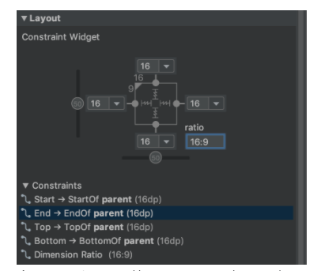Cómo ajustar los márgenes de la vista
Para controlar el margen de cada vista en la ventana Attributes, haz clic en el número de la línea que representa cada restricción
Cómo controlar grupos lineales con una cadena
Una cadena es un grupo de vistas que están vinculadas entre sí con restricciones de posición bidireccionales. Dentro de una cadena, se pueden distribuir las vistas de manera horizontal o vertical.
Las cadenas se pueden diseñar de una de las siguientes maneras:
1. Spread: Las vistas se distribuyen uniformemente (tras restar los márgenes). Es el valor predeterminado.
2. Spread inside: La primera y la última vista se fijan a las restricciones de cada extremo de la cadena y el resto se distribuye de manera uniforme.
3. Weighted: Cuando se define la cadena como spread o spread inside, puedes configurar una o más vistas como "Match Constraints" (0dp) para llenar el espacio restante. De forma predeterminada, se distribuye el espacio uniformemente entre las vistas configuradas como "Match Constraints", pero puedes asignar una ponderación de importancia a cada vista con los atributos layout_constraintHorizontal_weight y layout_constraintVertical_weight. Esto funciona de la misma manera que layout_weight en un diseño lineal. Por lo tanto, la vista con el valor de ponderación más alto obtiene la mayor cantidad de espacio; las vistas que tengan la misma ponderación obtendrán la misma cantidad de espacio.
4. Packed: Se agrupan las vistas (una vez que se restan los márgenes). Luego puedes ajustar el sesgo de toda la cadena (izquierda/derecha o arriba/abajo) cambiando el sesgo de la vista de extremo de la cadena.
La vista de "extremo" de la cadena (la ubicada más a la izquierda en una cadena horizontal y más arriba en una cadena vertical) define el estilo de la cadena en XML. Sin embargo, puedes seleccionar cualquier vista en la cadena y hacer clic en el botón de la cadena que aparece debajo de la vista para alternar entre Spread, Spread inside y Packed.
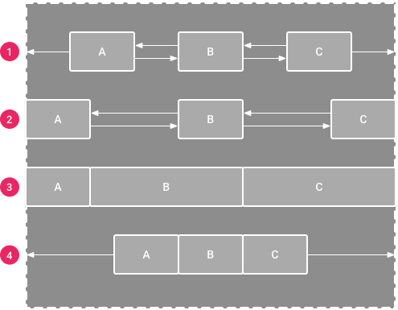Estilos y temas
Los estilos y temas en Android permiten separar los detalles de diseño de la app de la estructura y el comportamiento de la IU, de forma similar a las hojas de estilo en el diseño web.
Estilo
Es una colección de atributos que especifican la apariencia de un solo View. Un estilo puede especificar atributos como el color y el tamaño de fuente, el color de fondo y mucho más.
Tema
Es un tipo de estilo que se aplica a toda una app, actividad o jerarquía de vistas, no solo a una vista individual. Cuando aplicas tu estilo como tema, cada vista de la app o actividad aplica cada atributo de estilo que admite. Los temas también pueden aplicar estilos a elementos que no se ven, como la barra de estado y el fondo de la ventana.
Los estilos y los temas se declaran en un archivo de recursos de estilo en res/values/, generalmente llamado styles.xml.
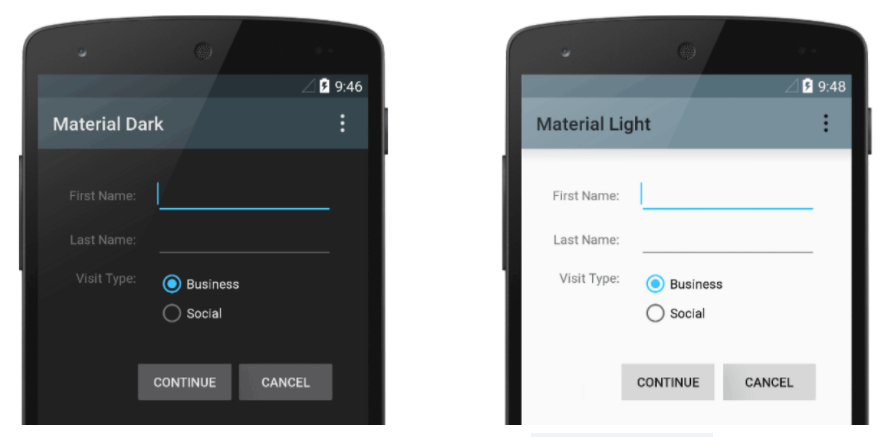Se aplico dos temas distintos a la misma actividad: Theme.AppCompat a la imagen de la izquierda y Theme.AppCompat.Light a la derecha.
CREA Y APLICA UN ESTILO
Para crear un nuevo estilo o tema, se debe abrir el archivo res/values/styles.xml del proyecto. Se debe seguir los siguientes pasos:
1. Agregar un elemento <style> con un nombre que identifique el estilo de forma exclusiva.
2. Agregar un elemento <item> para cada atributo de estilo que quieras definir.
El name en cada elemento especifica un atributo que de otro modo usarías como un atributo XML en tu diseño. El valor del elemento <item> es el valor de ese atributo.
Por ejemplo, si defines el siguiente estilo:
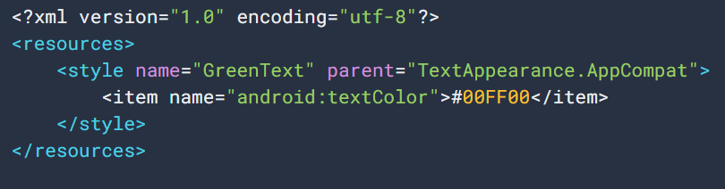Puedes aplicar el estilo a una vista de la siguiente manera:
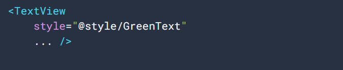Cada atributo especificado en el estilo se aplica a esa vista si esta lo acepta. La vista simplemente ignora los atributos que no acepta.
Nota: Solo el elemento al que se agrega el atributo style recibe esos atributos de estilo; cualquier vista secundaria no aplica los estilos. Si deseas que las vistas secundarias hereden estilos, aplica el estilo con el atributo android:theme.
EXTIENDE Y PERSONALIZA UN ESTILO
Cuando se crea un estilo propio, se debe extender de un estilo existente del marco de trabajo o la biblioteca de compatibilidad para mantener la compatibilidad con los estilos de IU de la plataforma.
Para extender un estilo, especifica el que quieres extender con el atributo parent.
Por ejemplo, se puede heredar la apariencia del texto predeterminada de la plataforma de Android y modificarla de la siguiente manera:
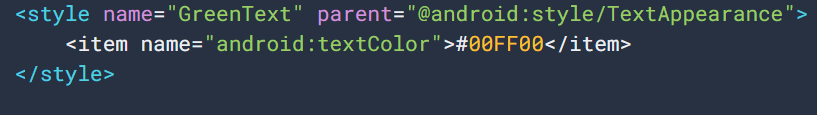Para heredar estilos de una biblioteca o de un proyecto propio, se declara el nombre del estilo principal sin la parte @android:style/ que se muestra arriba. De la siguiente manera:
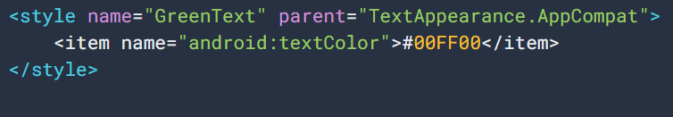También se puede heredar estilos (excepto los de la plataforma) extendiendo el nombre de un estilo con una notación de puntos en vez de usar el atributo parent. Es decir, se puede prefijar el nombre de estilo con el nombre del estilo que se desea heredar, separados por un punto. Por lo general, se debe hacer esto solo cuando se extiende de los propios estilos, no de los estilos de otras bibliotecas.
Por ejemplo:
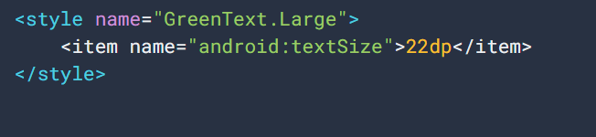Si usas la notación de puntos para extender un estilo, y también incluyes el atributo parent, los estilos primarios anulan cualquier estilo heredado a través de ella.
APLICA UN ESTILO COMO UN TEMA
Se puede crear un tema de la misma manera que se crea estilos. La diferencia es cómo aplicarla: en vez de aplicar un estilo con el atributo style en una vista, se aplica un tema con el atributo android:theme en la etiqueta <application> o en una etiqueta <activity> en el archivo AndroidManifest.xml.
Por ejemplo, en la siguiente imagen se muestra cómo aplicar el tema "oscuro" de material design de la biblioteca de compatibilidad de Android a toda la app:
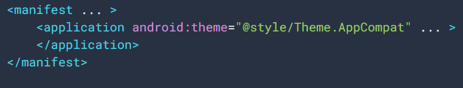En la siguiente imagen se muestra cómo aplicar el tema "claro" a una sola actividad:
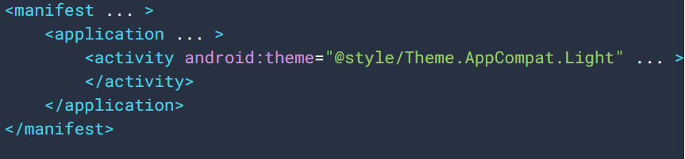Cada vista de la app o actividad aplica los estilos definidos en el tema dado. Si una vista solo admite algunos de los atributos declarados en el estilo, solo aplica esos atributos e ignora los que no admite.
Para personalizar el tema para que se ajuste a la marca de la app. La mejor manera de hacerlo es extender estos estilos de la biblioteca de compatibilidad y anular algunos de los atributos.
JERARQUÍA DE ESTILOS
Android ofrece una variedad de formas para configurar atributos. Por ejemplo, se puede configurar atributos directamente en un diseño, aplicar un estilo a una vista, aplicar un tema a un diseño o incluso configurar atributos de forma programática.
Cuando se elija diseñar la app, se debe tener en cuenta la jerarquía de estilos de Android. Se debe usar temas y estilos tanto como sea posible para mantener la coherencia.
Si se especifica los mismos atributos en varios lugares, la siguiente lista determina qué atributos se aplican finalmente. La lista está ordenada de mayor a menor prioridad:
· Aplicación de estilo a nivel de carácter o párrafo a través de intervalos de texto a clases derivadas de TextView
· Aplicación de atributos de forma programática
· Aplicación de atributos individuales directamente a una vista
· Aplicación de un estilo a una vista
· Estilo predeterminado
· Aplicación de un tema a una colección de vistas, una actividad o toda tu app
· Aplicación de un estilo determinado específico de la vista, como la configuración de un TextAppearance en un TextView
TEXTAPPEARANCE
Una limitación es que se puede aplicar un solo estilo a un View. Sin embargo, en un TextView también se puede especificar un atributo TextAppearance que funciona de manera similar a un estilo, como se muestra en el siguiente ejemplo:
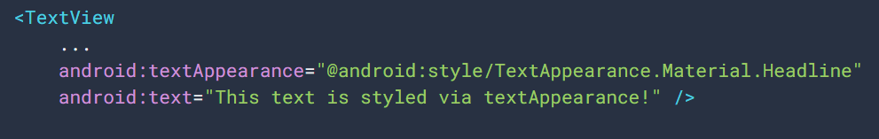TextAppearance permite definir un estilo específico del texto y dejar el estilo de un View disponible para otros usos. Sin embargo, si se define cualquier atributo de texto directamente en un View o en un estilo, esos valores anularán los valores de TextAppearance.
TextAppearance admite un subconjunto de atributos de estilo que ofrece TextView.
TextAppearance funciona a nivel de caracteres y no a nivel de párrafo, por lo que no se admiten atributos que afecten a todo el diseño.
PERSONALIZA EL TEMA PREDETERMINADO
Cuando se cree un proyecto con Android Studio, aplica un tema de material design a la app de forma predeterminada, como se define en el archivo styles.xml de tu proyecto. Este estilo AppTheme extiende un tema de la biblioteca de compatibilidad e incluye anulaciones para los atributos de color que usan los elementos de IU clave, como la barra de aplicaciones y el botón de acción flotante (si se usan). Para poder personalizar rápidamente el diseño del color de la app, se debe actualizar los colores proporcionados.
Por ejemplo, el archivo styles.xml debería ser similar a esto:
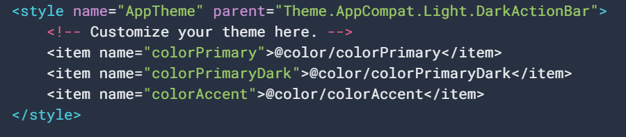Los valores de estilo en realidad son referencias a otros recursos de color, definidos en el archivo res/values/colors.xml del proyecto. Así que ese es el archivo que se debe editar para cambiar los colores.
Actualiza los valores de los colores en res/values/colors.xml:
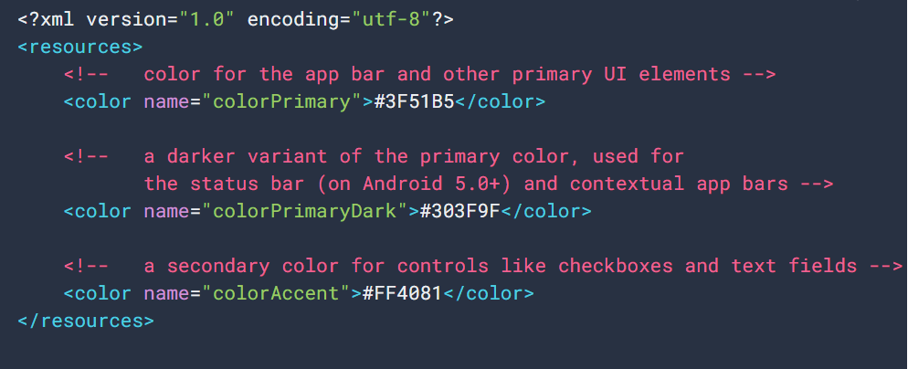Luego, se puede anular cualquier otro estilo que se quiera. Por ejemplo, cambiar el color de fondo de la actividad de la siguiente manera:
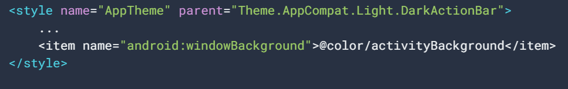Nota: Los nombres de los atributos de la biblioteca de compatibilidad no usan el prefijo android:, esto se usa solamente para atributos del marco de trabajo de Android.
AGREGA ESTILOS ESPECÍFICOS DE UNA VERSIÓN
Si una nueva versión de Android agrega atributos de tema que deseas usar, puedes agregarlo al tema sin que dejen de ser compatibles con versiones anteriores. Se necesita otro archivo styles.xml guardado en un directorio values que incluya el calificador de versión del recurso. Por ejemplo:
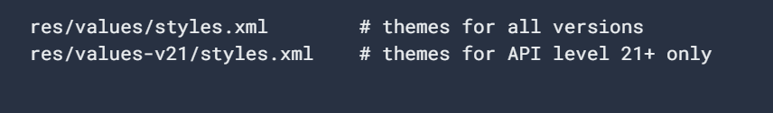Debido a que los estilos del archivo values/styles.xml están disponibles para todas las versiones, los temas en values-v21/styles.xml pueden heredarlos. Así, se puede evitar duplicar estilos comenzando con un tema "base" y, luego, extenderlo en los estilos específicos de la versión.
PERSONALIZA ESTILOS DE WIDGET
Cada widget del marco de trabajo y la biblioteca de compatibilidad tiene un estilo predeterminado. Por ejemplo, cuando se diseña la app con un tema de la biblioteca de compatibilidad, una instancia de Button se diseña usando el estilo
Por ejemplo, aplica el estilo de botón sin bordes de la biblioteca:
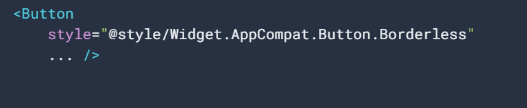Si se desea aplicar este estilo a todos los botones, se puede declarar en el buttonStyle del tema de la siguiente manera:
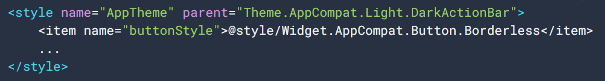Ciclo de Vida
Cómo interpretar el ciclo de vida de una actividad
Cuando un usuario navega por tu app, sale de ella y vuelve a entrar, las instancias de Activity de tu app pasan por diferentes estados de su ciclo de vida. La clase Activity proporciona una serie de devoluciones de llamada que permiten a la actividad saber que cambió un estado, es decir, que el sistema está creando, deteniendo o reanudando una actividad, o finalizando el proceso en el que se encuentra.
Dentro de los métodos de devolución de llamada de ciclo de vida, puedes declarar el comportamiento que tendrá tu actividad cuando el usuario la abandone y la reanude. Por ejemplo, si creas un reproductor de video en streaming, puedes pausar el video y cancelar la conexión de red cuando el usuario cambia a otra app. Cuando el usuario vuelve, puedes volver a establecer la conexión con la red y permitir que el usuario reanude el video desde el mismo punto. En otras palabras, cada devolución de llamada te permite realizar un trabajo específico que es apropiado para un cambio de estado en particular. Hacer el trabajo preciso en el momento adecuado y administrar las transiciones correctamente hace que tu app sea más sólida y eficiente. Por ejemplo, una buena implementación de las devoluciones de llamada de un ciclo de vida puede ayudar a garantizar que tu app:
• No falle si el usuario recibe una llamada telefónica o cambia a otra app mientras usa la tuya. • No consuma recursos valiosos del sistema cuando el usuario no la use de forma activa. • No pierda el progreso del usuario si este abandona tu app y regresa a ella posteriormente.
• No falle ni pierda el progreso del usuario cuando se gire la pantalla entre la orientación horizontal y la vertical.
En este documento, se explica en detalle el ciclo de vida de las actividades. Al principio del documento, se describe el paradigma del ciclo de vida. A continuación, se explica cada una de las devoluciones de llamada: qué sucede internamente mientras se ejecutan y qué se debe implementar durante ellas. Luego, se presenta de forma breve la relación entre el estado de una actividad y la vulnerabilidad de un proceso que el sistema está por finalizar. Por último, se abordan varios temas relacionados con las transiciones entre los estados de una actividad.
Para obtener información sobre cómo administrar ciclos de vida, incluida orientación sobre prácticas recomendadas, consulta Cómo manejar ciclos de vida con componentes optimizados para ciclos de vida y Cómo guardar estados de IU. Para aprender a diseñar una app sólida y de calidad utilizando actividades junto con componentes de arquitectura, consulta la Guía sobre la arquitectura de apps.
Conceptos de los ciclos de vida de las actividades
Para navegar por las transiciones entre las etapas del ciclo de vida de una actividad, la clase Activity proporciona un conjunto básico de seis devoluciones de
llamadas: onCreate(), onStart(), onResume(), onPause(), onStop() y onDestroy(). El sistema invoca cada una de estas devoluciones de llamada cuando una operación entra en un nuevo estado.
En la figura 1, se muestra una representación visual de este paradigma.
Figura 1: Ilustración simplificada del ciclo de vida de una actividad
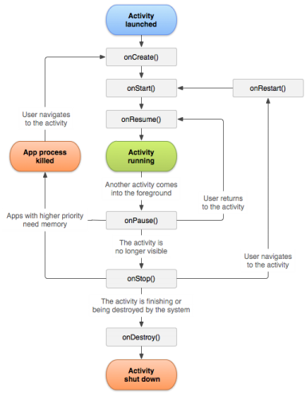Cuando el usuario comienza a abandonar la actividad, el sistema llama a métodos para desmantelarla. En algunos casos, este desmantelamiento es solo parcial; la actividad todavía reside en la memoria (por ejemplo, cuando el usuario cambia a otra app) y aún puede volver al primer plano. Si el usuario regresa a esa actividad, se reanuda desde donde la dejó. Con algunas excepciones, se restringen las apps para que no inicien actividades cuando se ejecutan en segundo plano.
La probabilidad de que el sistema finalice un proceso determinado, junto con las actividades que contiene, depende del estado de la actividad en ese momento. En Estado de actividad y expulsión de memoria, obtendrás más información sobre la relación entre el estado y la vulnerabilidad a la expulsión.
Según la complejidad de tu actividad, es probable que no necesites implementar todos los métodos del ciclo de vida. Sin embargo, es importante que comprendas cada uno de ellos y que implementes aquellos que garanticen que tu app se comporte como esperan los usuarios.
En la siguiente sección de este documento, se proporcionan detalles sobre las devoluciones de llamada que utilizas para administrar las transiciones entre estados.
Devoluciones de llamada del ciclo de vida
En esta sección, se brinda información conceptual y de implementación sobre los métodos de devolución de llamada utilizados durante el ciclo de vida de una actividad.
Algunas acciones, como llamar a setContentView(), pertenecen a los propios métodos del ciclo de vida de la actividad. Sin embargo, el código que implementa las acciones de un componente dependiente debe colocarse en el propio componente. Para ello, debes hacer que el componente dependiente priorice el ciclo de vida. Consulta Cómo manejar ciclos de vida con componentes optimizados para ciclos de vida a fin de obtener más información sobre cómo hacer que los componentes de tus dependencias prioricen los ciclos de vida.
onCreate()
Debes implementar esta devolución de llamada, que se activa cuando el sistema crea la actividad por primera vez. Cuando se crea la actividad, esta entra en el estado Created. En el método onCreate(), ejecutas la lógica de arranque básica de la aplicación que debe ocurrir una sola vez en toda la vida de la actividad. Por ejemplo, tu implementación de onCreate() podría vincular datos a listas, asociar la actividad con un ViewModel y crear instancias de algunas variables de alcance de clase. Este método recibe el parámetro savedInstanceState, que es un objeto Bundle que contiene el estado ya guardado de la actividad. Si la actividad nunca existió, el valor del objeto Bundle es nulo.
Si tienes un componente que prioriza el ciclo de vida y que está conectado al ciclo de vida de tu actividad, recibirá el evento ON_CREATE. Se llamará al método anotado con @OnLifecycleEvent para que tu componente que prioriza el ciclo de vida pueda realizar cualquier código de configuración que necesite para el estado de creación.
En el siguiente ejemplo del método onCreate(), se muestra la configuración básica de la actividad, como declarar la interfaz de usuario (definida en un archivo XML de diseño), definir las variables de miembro y configurar parte de la IU. En este ejemplo, se especifica el archivo de diseño XML haciendo pasar el ID de recurso del archivo R.layout.main_activity a setContentView().
KOTLINJAVA
TextView textView;
// some transient state for the activity instance
String gameState;
@Override
public void onCreate(Bundle savedInstanceState) {
// call the super class onCreate to complete the creation of activity like // the view hierarchy
super.onCreate(savedInstanceState);
// recovering the instance state
if (savedInstanceState != null) {
gameState = savedInstanceState.getString(GAME_STATE_KEY);
}
// set the user interface layout for this activity
// the layout file is defined in the project res/layout/main_activity.xml file setContentView(R.layout.main_activity);
// initialize member TextView so we can manipulate it later
textView = (TextView) findViewById(R.id.text_view);
}
// This callback is called only when there is a saved instance that is previously saved by using
// onSaveInstanceState(). We restore some state in onCreate(), while we can optionally restore
// other state here, possibly usable after onStart() has completed. // The savedInstanceState Bundle is same as the one used in onCreate(). @Override
public void onRestoreInstanceState(Bundle savedInstanceState) {
textView.setText(savedInstanceState.getString(TEXT_VIEW_KEY));
}
// invoked when the activity may be temporarily destroyed, save the instance state here
@Override
public void onSaveInstanceState(Bundle outState) {
outState.putString(GAME_STATE_KEY, gameState);
outState.putString(TEXT_VIEW_KEY, textView.getText());
// call superclass to save any view hierarchy
super.onSaveInstanceState(outState);
}
Como alternativa a definir el archivo XML y pasarlo a setContentView(), puedes crear nuevos objetos View en el código de tu actividad y crear una jerarquía de vistas insertando nuevos objetos View en un ViewGroup. A continuación, utiliza este diseño para pasar la raíz ViewGroup a setContentView(). Para obtener más información sobre cómo crear una interfaz de usuario, consulta la documentación de Interfaz de usuario.
Tu actividad no reside en el estado Created. Después de que se termina de ejecutar el método onCreate(), la actividad entra en el estado Started, y el sistema llama rápidamente a los métodos onStart() y onResume(). En la siguiente sección, se explica la devolución de llamada onStart().
onStart()
Cuando la actividad entra en el estado Started, el sistema invoca esta devolución de llamada. La llamada onStart() hace que el usuario pueda ver la actividad mientras la app se prepara para que esta entre en primer plano y se convierta en interactiva. Por ejemplo, este método es donde la app inicializa el código que mantiene la IU.
Cuando la actividad pase al estado Started, cualquier componente que priorice el ciclo de vida vinculado al de la actividad recibirá el evento ON_START.
El método onStart() se completa muy rápido y, al igual que con el estado Created, la actividad no permanece en el estado Started. Una vez finalizada esta devolución de llamada, la actividad entra en el estado Resumed, y el sistema invoca el método onResume().
onResume()
Cuando la actividad entra en el estado Resumed, pasa al primer plano y, a continuación, el sistema invoca la devolución de llamada onResume(). Este es el estado en el que la app interactúa con el usuario. La app permanece en este estado hasta que ocurre algún evento que la quita de foco. Tal evento podría ser, por ejemplo, recibir una llamada telefónica, que el usuario navegue a otra actividad o que se apague la pantalla del dispositivo.
Cuando se reanude la actividad, cualquier componente que priorice el ciclo de vida vinculado al de la actividad recibirá el evento ON_RESUME. Aquí es donde los componentes del ciclo de vida pueden habilitar cualquier funcionalidad que necesite ejecutarse mientras el componente esté visible y en primer plano, como, por ejemplo, iniciar una vista previa de la cámara.
Cuando se produce un evento de interrupción, la actividad entra en el estado Paused y el sistema invoca la devolución de llamada onPause().
Si la actividad regresa al estado Resumed desde Paused, el sistema volverá a llamar al método onResume(). Por esta razón, debes implementar onResume() para inicializar los componentes que lances en onPause() y tienes que realizar otras inicializaciones que deban ejecutarse cada vez que la actividad entre en el estado Resumed.
A continuación, se incluye un ejemplo de un componente que prioriza el ciclo de vida que accede a la cámara cuando el componente recibe el evento ON_RESUME:
KOTLINJAVA
public class CameraComponent implements LifecycleObserver {
...
@OnLifecycleEvent(Lifecycle.Event.ON_RESUME)
public void initializeCamera() {
if (camera == null) {
getCamera();
}
}
...
}
El código anterior inicializa la cámara una vez que LifecycleObserver recibe el evento ON_RESUME. Sin embargo, en el modo multiventana, tu actividad puede ser totalmente visible incluso cuando se encuentra en el estado Paused. Por ejemplo, si el usuario está en el modo multiventana y presiona la otra ventana que no contiene tu actividad, esta se moverá al estado Paused. Si deseas que la cámara esté activa solo cuando se reanude la app (visible y activa en primer plano), inicializa la cámara después del evento ON_RESUME que se mostró antes. Si deseas mantener la cámara activa mientras la actividad está en el estado Paused, pero visible (por ejemplo, en el modo multiventana), debes inicializar la cámara después del evento ON_START. No obstante, ten en cuenta que tener la cámara activa mientras la actividad se encuentra en el estado Paused puede impedir que otra app que se encuentre en el estado Resumed pueda acceder a la cámara en el modo multiventana. En ocasiones, puede ser necesario mantener la cámara activa mientras la actividad está en el estado Paused. Sin embargo, esto podría degradar la experiencia general del usuario. Piensa con atención en qué parte del ciclo de vida es más apropiado tomar el control de los recursos compartidos del sistema en el contexto del modo multiventana. Para obtener más información sobre la compatibilidad con ese modo, consulta Compatibilidad con el modo multiventana.
Independientemente del evento en el que decidas realizar una operación de inicialización, asegúrate de utilizar el evento de ciclo de vida correspondiente para liberar el recurso. Si inicializas algún evento después de ON_START, libéralo o finalízalo después del evento ON_STOP. Si inicializas un evento después de ON_RESUME, libéralo después de ON_PAUSE.
Ten en cuenta que el fragmento de código anterior coloca el código de inicialización de la cámara en un componente que prioriza el ciclo de vida. En su lugar, puedes poner este código directamente en las devoluciones de llamada del ciclo de vida de la actividad, como onStart() y onStop(), aunque
esto no es recomendable. Agregar esta lógica a un componente independiente que prioriza el ciclo de vida te permite reutilizar el componente en varias actividades sin tener que duplicar el código. Consulta Cómo manejar ciclos de vida con componentes optimizados para ciclos de vida a fin de aprender a crear un componente que priorice el ciclo de vida.
onPause()
El sistema llama a este método a modo de primera indicación de que el usuario está abandonando tu actividad (aunque no siempre significa que está finalizando la actividad); esto indica que la actividad ya no está en primer plano (aunque puede seguir siendo visible si el usuario está en el modo multiventana). Utiliza el método onPause() para pausar o ajustar las operaciones que no deben continuar (o que deben continuar con moderación) mientras Activity se encuentra en estado Paused y que esperas reanudar en breve. Hay varias razones por las que una actividad puede entrar en este estado. Por ejemplo:
• Algunos eventos interrumpen la ejecución de la app, como se describe en la sección onResume(). Este es el caso más común.
• En Android 7.0 (API nivel 24) o versiones posteriores, varias apps se ejecutan en el modo multiventana. Debido a que solo una de las apps (ventanas) tiene foco en cualquier momento, el sistema pausa todas las demás.
• Se abre una nueva actividad semitransparente (como un diálogo). Mientras la actividad siga siendo parcialmente visible, pero no esté en foco, se mantendrá pausada.
Cuando la actividad pase al estado de pausa, cualquier componente que priorice el ciclo de vida vinculado al ciclo de vida de la actividad recibirá el evento ON_PAUSE. Aquí es donde los componentes del ciclo de vida pueden detener cualquier funcionalidad que no necesite ejecutarse mientras el componente no esté en primer plano, como detener una vista previa de la cámara.
También puedes utilizar el método onPause() para liberar recursos del sistema, controladores de sensores (como el GPS) o cualquier otro recurso que pueda afectar la duración de la batería mientras tu actividad esté en pausa y el usuario no los necesite. Sin embargo, como se mencionó antes en la sección onResume(), una actividad con el estado Paused puede ser completamente visible si está en el modo multiventana. Por eso, deberías considerar usar onStop() en lugar de onPause() para liberar o ajustar por completo los recursos y operaciones relacionados con la IU a fin de admitir mejor el modo multiventana.
En el siguiente ejemplo de un LifecycleObserver que reacciona ante el evento ON_PAUSE, que es la contrapartida del ejemplo del evento ON_RESUME anterior, se libera la cámara que se inicializó después de recibir el evento ON_RESUME:
KOTLINJAVA
public class JavaCameraComponent implements LifecycleObserver {
...
@OnLifecycleEvent(Lifecycle.Event.ON_PAUSE)
public void releaseCamera() {
if (camera != null) {
camera.release();
camera = null;
}
}
...
}
Ten en cuenta que el fragmento de código anterior coloca el código de liberación de la cámara después de que LifecycleObserver recibe el evento ON_PAUSE. Como se mencionó antes, consulta Cómo manejar ciclos de vida con componentes optimizados para ciclos de vida a fin de aprender a crear un componente que priorice el ciclo de vida.
La ejecución de onPause() es muy breve y no necesariamente permite disponer de tiempo suficiente para realizar operaciones seguras. Por esta razón, no debes utilizar onPause() para guardar los datos de la aplicación o del usuario, realizar llamadas de red o ejecutar transacciones de la base de datos, ya que es posible que no se complete dicho trabajo antes de que finalice el método. En su lugar, debes realizar operaciones de finalización de cargas pesadas durante onStop(). Si deseas obtener más información sobre las operaciones apropiadas que puedes realizar durante onStop(), consulta onStop(). Si deseas obtener más información sobre cómo guardar datos, consulta Cómo guardar y restablecer el estado de la actividad.
La finalización del método onPause() no significa que la actividad abandone el estado Paused. Más bien, la actividad permanecerá en ese estado hasta que se reanude o se vuelva completamente invisible para el usuario. Si se reanuda la actividad, el sistema volverá a invocar la devolución de llamada onResume(). Si la actividad regresa del estado Paused a Resumed, el sistema mantendrá la instancia Activity en la memoria y la volverá a llamar cuando invoque onResume(). En esta situación, no es necesario que reinicialices los componentes que se crearon durante los métodos de devolución de llamada que llevan al estado Resumed. Si la actividad se vuelve completamente invisible, el sistema llamará a onStop(). En la siguiente sección, se aborda la devolución de llamada onStop().
onStop()
Cuando el usuario ya no puede ver tu actividad, significa que ha entrado en el estado Stopped, y el sistema invoca la devolución de llamada onStop(). Esto puede ocurrir, por ejemplo, cuando una actividad recién lanzada cubre toda la pantalla. El sistema también puede llamar a onStop() cuando haya terminado la actividad y esté a punto de finalizar.
Cuando la actividad pase al estado Stopped, cualquier componente que priorice el ciclo de vida vinculado al de la actividad recibirá el evento ON_STOP. Aquí es donde los componentes del ciclo de vida pueden detener cualquier funcionalidad que no necesite ejecutarse mientras el componente no sea visible en la pantalla.
En el método onStop(), la app debe liberar o ajustar los recursos que no son necesarios mientras no sea visible para el usuario. Por ejemplo, tu app podría pausar animaciones o cambiar de actualizaciones de ubicación detalladas a más generales. Usar onStop() en lugar de onPause() garantiza que continúe el trabajo relacionado con la IU, incluso cuando el usuario esté viendo tu actividad en el modo multiventana.
También debes utilizar onStop() para realizar operaciones de finalización con un uso relativamente intensivo de la CPU. Por ejemplo, si no encuentras un momento más oportuno para guardar información en una base de datos, puedes hacerlo en onStop(). Por ejemplo, a continuación, se muestra una implementación de onStop() que guarda los contenidos del borrador de una nota en el almacenamiento persistente:
KOTLINJAVA
@Override
protected void onStop() {
// call the superclass method first
super.onStop();
// save the note's current draft, because the activity is stopping // and we want to be sure the current note progress isn't lost.
ContentValues values = new ContentValues();
values.put(NotePad.Notes.COLUMN_NAME_NOTE, getCurrentNoteText()); values.put(NotePad.Notes.COLUMN_NAME_TITLE, getCurrentNoteTitle());
// do this update in background on an AsyncQueryHandler or equivalent asyncQueryHandler.startUpdate (
mToken, // int token to correlate calls
null, // cookie, not used here
uri, // The URI for the note to update.
values, // The map of column names and new values to apply to them. null, // No SELECT criteria are used.
null // No WHERE columns are used.
);
}
Ten en cuenta que el código de ejemplo anterior utiliza directamente SQLite. En su lugar, deberías utilizar Room, una biblioteca de persistencia que proporciona una capa de abstracción sobre SQLite. Para obtener más información sobre los beneficios de usar Room y cómo implementarla en tu app, consulta la guía Biblioteca de persistencia Room.
Cuando tu actividad entra en el estado Stopped, se mantiene el objeto Activity en la memoria. Mantiene toda la información de estado y de miembros, pero no está vinculada al administrador de ventanas. Cuando se reanuda la actividad, esta recuerda la información. No necesitas reinicializar los componentes que se crearon durante los métodos de devolución de llamada que llevan al estado Resumed. El sistema también lleva un registro del estado actual de cada objeto View en el diseño; por lo tanto, si el usuario ingresó texto en un widget EditText, se conserva ese contenido para que no necesites guardarlo ni restablecerlo.
Nota: Una vez que se detiene la actividad, el sistema puede finalizar el proceso que la contiene si necesita recuperar memoria. Incluso si el sistema finaliza el proceso mientras la actividad está detenida, el sistema conservará el estado de los objetos View (como el texto de un widget EditText) en un Bundle (un BLOB de pares clave-valor) y los restablecerá si el usuario regresa a la actividad. Para obtener más información sobre cómo restablecer una actividad a la que regresa un usuario, consulta Cómo guardar y restablecer el estado de la actividad.
Desde el estado Stopped, la actividad regresa a interactuar con el usuario o se termina de ejecutar y desaparece. Si la actividad regresa, el sistema invoca a onRestart(). Si se terminó de ejecutar Activity, el sistema llamará a onDestroy(). En la siguiente sección, se explica la devolución de llamada onDestroy().
onDestroy()
Se llama a onDestroy() antes de que finalice la actividad. El sistema invoca esta devolución de llamada por los siguientes motivos:
1. La actividad está terminando (debido a que el usuario la descarta por completo o a que se llama a finish()).
2. El sistema está finalizando temporalmente la actividad debido a un cambio de configuración (como la rotación del dispositivo o el modo multiventana).
Cuando la actividad pase al estado Destroyed, cualquier componente que priorice el ciclo de vida vinculado al de la actividad recibirá el evento ON_DESTROY. Aquí es donde los componentes del ciclo de vida pueden recuperar cualquier elemento que se necesite antes de que finalice el objeto Activity.
En lugar de poner lógica en ese objeto para determinar por qué está finalizando la actividad, deberías utilizar un objeto ViewModel a fin de contener los datos de vista relevantes para Activity. Si se va a recrear el objeto Activity debido a un cambio de configuración, no es necesario que
ViewModel realice ninguna acción, ya que se conservará y se entregará a la siguiente instancia del objeto Activity. Si no se va a recrear el objeto Activity, entonces ViewModel tendrá el método onCleared(), en el que podrá recuperar cualquier dato que necesite antes de que finalice la actividad.
Puedes diferenciar estos dos casos con el método isFinishing().
Si la actividad está terminando, onDestroy() es la devolución de llamada del ciclo de vida final que recibe la actividad. Si se llama a onDestroy() como resultado de un cambio de configuración, el sistema crea inmediatamente una nueva instancia de actividad y luego llama a onCreate() en esa nueva instancia en la nueva configuración.
La devolución de llamada onDestroy() debe liberar todos los recursos que aún no han sido liberados por devoluciones de llamada anteriores, como onStop().
Estado de actividad y expulsión de memoria
El sistema finaliza los procesos cuando necesita liberar RAM; la probabilidad de que el sistema finalice un proceso determinado dependerá del estado del proceso en ese momento. El estado del proceso, a su vez, depende del estado de la actividad que se ejecuta en el proceso. La tabla 1 muestra la correlación entre el estado del proceso, el estado de la actividad y la probabilidad de que el sistema finalice el proceso.
Probabilidad de que finalice Estado del proceso Estado de la actividad
Menos Primer plano (en foco o por estar en él) Created Started
Resumed
Más Segundo plano (foco perdido) Pausado Mayor Segundo plano (no visible) Detenido Vacío Finalizado
Tabla 1: Relación entre el ciclo de vida del proceso y el estado de la actividad
El sistema nunca finaliza una actividad de forma directa para liberar memoria. En su lugar, finaliza el proceso en el que se ejecuta la actividad para eliminar no solo la actividad, sino también todo lo que se ejecuta en el proceso. Para aprender a preservar y restaurar el estado de la IU de tu actividad cuando finaliza el proceso iniciado por el sistema, consulta Cómo guardar y restablecer el estado de una actividad.
Un usuario también puede finalizar un proceso utilizando el Administrador de aplicaciones de Configuración para finalizar la app correspondiente.
Para obtener más información sobre los procesos en general, consulta Procesos y subprocesos. Para obtener más información sobre cómo está ligado el ciclo de vida de un proceso a los estados de las actividades que lo componen, consulta la sección Ciclo de vida de los procesos de esa página.
Cómo guardar y restablecer el estado transitorio de la IU
El usuario espera que se conserve el estado de la IU de una actividad durante un cambio de configuración, como la rotación o el cambio al modo multiventana. Sin embargo, el sistema finaliza la actividad de forma predeterminada cuando se produce un cambio de configuración de este tipo, lo que elimina cualquier estado de la IU almacenado en la instancia de actividad. Del mismo modo, un usuario espera que el estado de la IU siga siendo el mismo si cambia temporalmente de tu app a una diferente y, luego, regresa a tu app. Sin embargo, el sistema puede finalizar el proceso de tu aplicación mientras el usuario no la esté utilizando y tu actividad esté detenida.
Cuando finaliza la actividad debido a restricciones del sistema, debes conservar el estado transitorio de la IU utilizando una combinación de ViewModel, onSaveInstanceState() o almacenamiento local. Para obtener más información sobre las expectativas de los usuarios en comparación con el comportamiento del sistema y sobre la mejor manera de preservar los datos complejos del estado de la IU en toda la actividad iniciada por el sistema y la finalización del proceso, consulta Cómo guardar estados de IU.
En esta sección, se describe el estado de la instancia y cómo implementar el método onSaveInstance(), que es una devolución de llamada a la actividad. Si los datos de tu IU son simples y ligeros, como un tipo de datos primitivos o un objeto simple (como String), puedes utilizar onSaveInstanceState() solamente para mantener el estado de la IU tanto en los cambios de configuración como en la finalización del proceso iniciado por el sistema. En la mayoría de los casos, sin embargo, debes utilizar tanto ViewModel como onSaveInstanceState() (como se describe en Cómo guardar estados de IU), ya que onSaveInstanceState() tiene costos de serialización y deserialización.
Estado de la instancia
Existen algunas situaciones en las que finaliza tu actividad debido al comportamiento normal de la app, por ejemplo, cuando el usuario presiona el botón Atrás o tu actividad indica su propia finalización llamando al método finish(). Cuando finaliza tu actividad porque el usuario presiona Atrás o la actividad se finaliza a sí misma, se pierde para siempre el concepto de esa instancia Activity del sistema y del usuario. En esos casos, las expectativas del usuario coinciden con el comportamiento del sistema y no tienes trabajo adicional que hacer.
Sin embargo, si el sistema finaliza la actividad debido a restricciones (como un cambio de configuración o presión de memoria), entonces, aunque haya desaparecido la instancia real Activity, el sistema recuerda que existía. Si el usuario intenta volver a la actividad, el sistema crea una nueva instancia de esa actividad utilizando un conjunto de datos guardados que describen el estado de la actividad cuando finalizó.
Los datos guardados que el sistema utiliza para restaurar el estado previo se denominan estado de instancia y son un conjunto de pares clave-valor almacenados en un objeto Bundle. De forma predeterminada, el sistema utiliza el Bundle de estado de instancia para guardar información de cada objeto View del diseño de tu actividad (por ejemplo, el valor de texto ingresado en un widget EditText). De este modo, si finaliza y se vuelve a crear la instancia de tu actividad, se restablece el estado del diseño a su estado previo sin necesidad de que escribas el código. Sin embargo, es posible que tu actividad tenga más información de estado que desees restablecer, como variables de miembro que siguen el progreso del usuario en la actividad.
Nota: Para que el sistema Android restablezca el estado de las vistas de tu actividad, cada vista debe tener un ID único provisto por el atributo android:id.
Un objeto Bundle no es apropiado para preservar más que una cantidad trivial de datos, debido a que requiere serialización en el subproceso principal y consume memoria del proceso del sistema. Para preservar más que una cantidad muy pequeña de datos, debes adoptar un enfoque combinado, utilizando el almacenamiento local persistente, el método onSaveInstanceState() y la clase ViewModel, como se describe en Cómo guardar estados de IU.
Cómo guardar un estado de IU simple y ligero usando onSaveInstanceState()
A medida que comienza a detenerse tu actividad, el sistema llama al
método onSaveInstanceState() para que tu actividad pueda guardar la información del estado en un paquete de estado de instancia. La implementación predeterminada de ese método guarda información transitoria acerca del estado de la jerarquía de vistas de la actividad, como el texto de un widget EditText o la posición de desplazamiento de un widget ListView.
Para guardar información adicional sobre el estado de la instancia de tu actividad, debes anular onSaveInstanceState() y agregar pares clave-valor al objeto Bundle que se guarda en caso de que tu actividad finalice de forma inesperada. Si sustituyes enSaveInstanceState(), debes llamar a la implementación de superclase si deseas que la implementación predeterminada guarde el estado de la jerarquía de vistas. Por ejemplo:
KOTLINJAVA
static final String STATE_SCORE = "playerScore";
static final String STATE_LEVEL = "playerLevel";
// ...
@Override
public void onSaveInstanceState(Bundle savedInstanceState) {
// Save the user's current game state
savedInstanceState.putInt(STATE_SCORE, currentScore);
savedInstanceState.putInt(STATE_LEVEL, currentLevel);
// Always call the superclass so it can save the view hierarchy state super.onSaveInstanceState(savedInstanceState);
}
Nota: No se llama a onSaveInstanceState() cuando el usuario cierra explícitamente la actividad o en otros casos cuando llamas a finish().
Para guardar datos persistentes, como las preferencias del usuario o información de una base de datos, debes aprovechar las oportunidades apropiadas cuando tu actividad esté en primer plano. Si no se presenta tal oportunidad, debes guardar esos datos durante el método onStop().
Cómo restablecer el estado de la IU de la actividad utilizando el estado de la instancia guardada
Cuando se vuelve a crear tu actividad tras haber finalizado, puedes recuperar la instancia del estado guardado desde el Bundle que el sistema pasa a tu actividad. Los métodos de devolución de llamada onCreate() y onRestoreInstanceState() reciben el mismo Bundle que contiene la información del estado de la instancia.
Dado que se llama al método onCreate() tanto si el sistema crea una nueva instancia de tu actividad como si vuelve a crear una instancia previa, debes comprobar si el Bundle de estado es nulo antes de intentar leerlo. Si es nulo, el sistema creará una instancia nueva de la actividad en lugar de restablecer una previa que ya haya finalizado.
Por ejemplo, el siguiente fragmento de código muestra cómo puedes restablecer algunos datos del estado en onCreate():
KOTLINJAVA
@Override
protected void onCreate(Bundle savedInstanceState) {
super.onCreate(savedInstanceState); // Always call the superclass first
// Check whether we're recreating a previously destroyed instance if (savedInstanceState != null) {
// Restore value of members from saved state
currentScore = savedInstanceState.getInt(STATE_SCORE);
currentLevel = savedInstanceState.getInt(STATE_LEVEL);
} else {
// Probably initialize members with default values for a new instance }
// ...
}
En lugar de restaurar el estado durante onCreate(), puedes optar por
implementar onRestoreInstanceState(), al que el sistema llama después del método onStart(). El sistema llama a onRestoreInstanceState() solo si hay un estado guardado para restablecer, por lo que no necesitas comprobar si Bundle es nulo:
KOTLINJAVA
public void onRestoreInstanceState(Bundle savedInstanceState) {
// Always call the superclass so it can restore the view hierarchy super.onRestoreInstanceState(savedInstanceState);
// Restore state members from saved instance
currentScore = savedInstanceState.getInt(STATE_SCORE);
currentLevel = savedInstanceState.getInt(STATE_LEVEL);
}
Precaución: Siempre llama a la implementación de superclase onRestoreInstanceState() para que la implementación predeterminada pueda restablecer el estado de la jerarquía de vistas.
Navegación entre actividades
Es probable que una app entre en una actividad y salga de ella, quizás muchas veces, durante su ciclo de vida. Por ejemplo, el usuario puede presionar el botón Atrás del dispositivo, o la actividad puede necesitar lanzar una actividad diferente. En esta sección, se abordan temas que necesitas
saber para implementar transiciones de actividad que se realizaron correctamente. Estos temas incluyen iniciar una actividad desde otra, guardar el estado de la actividad y restablecer su estado.
Cómo iniciar una actividad desde otra
Es posible que una actividad necesite iniciar otra actividad en algún momento. Esta necesidad surge, por ejemplo, cuando una app necesita pasar de la pantalla actual a una nueva.
En función de si la actividad desea recuperar el resultado de la nueva actividad que está a punto de comenzar, se puede iniciar la nueva actividad utilizando los
métodos startActivity() o startActivityForResult(). En cualquier caso, debes pasar un objeto Intent.
El objeto Intent especifica la actividad exacta que quieres iniciar o describe el tipo de acción que quieres realizar (y el sistema selecciona la actividad adecuada para ti, que incluso puede ser de otra aplicación). Un objeto Intent también puede contener pequeñas cantidades de datos que utilizará la actividad que se inicie. Para obtener más información sobre la clase Intent, consulta Intents y filtros de intents.
startActivity()
Si la actividad recién iniciada no necesita mostrar un resultado, la actividad actual puede iniciarla llamando al método startActivity().
Cuando trabajes en tu propia aplicación, con frecuencia necesitarás iniciar una actividad conocida. Por ejemplo, el siguiente fragmento de código muestra cómo lanzar una actividad llamada SignInActivity.
KOTLINJAVA
Intent intent = new Intent(this, SignInActivity.class);
startActivity(intent);
Tu aplicación también podría querer realizar alguna acción, como enviar un correo electrónico, mandar un mensaje de texto o actualizar su estado con datos de tu actividad. En ese caso, es posible que tu aplicación no tenga actividades propias para realizar esas acciones, por lo que, en su lugar, puedes aprovechar las actividades que proporcionan otras aplicaciones del dispositivo y que pueden realizar las acciones por ti. Aquí es donde los intents pasan a ser muy valiosos, ya que puedes crear un intent que describa una acción que quieres realizar y el sistema iniciará la actividad adecuada desde otra aplicación. Si hay varias actividades que pueden controlar el intent, el usuario podrá seleccionar la que quiera usar. Por ejemplo, si quieres permitir que el usuario envíe un mensaje de correo electrónico, puedes crear el siguiente intent:
KOTLINJAVA
Intent intent = new Intent(Intent.ACTION_SEND);
intent.putExtra(Intent.EXTRA_EMAIL, recipientArray);
startActivity(intent);
El EXTRA_EMAIL adicional agregado al intent es un arreglo de strings de direcciones de correo electrónico a las que se debe enviar el mensaje. Cuando una aplicación de correo electrónico responde a este intent, lee el arreglo de strings proporcionado en el objeto adicional y las coloca en el campo "Para" del formulario de composición de correo electrónico. En esta situación, se inicia la actividad de la aplicación de correo electrónico y, cuando el usuario termina, se reanuda tu actividad.
startActivityForResult()
En ocasiones, se desea obtener el resultado de una actividad cuando esta termina. Por ejemplo, puedes iniciar una actividad que permita al usuario elegir a una persona de una lista de contactos; cuando termina, muestra a la persona seleccionada. Para ello, llama al
método startActivityForResult(Intent, int), donde el parámetro entero identifica la llamada. Este identificador sirve para desambiguar entre varias llamadas
a startActivityForResult(Intent, int) de la misma actividad. No es un identificador global y no corre el riesgo de entrar en conflicto con otras apps o actividades. El resultado se obtiene a través de tu método onActivityResult(int, int, Intent).
Cuando se lleva a cabo una actividad secundaria, puedes llamar a setResult(int) para mostrarle los datos a la actividad superior. La actividad secundaria siempre debe proporcionar un código de resultado, que pueden ser los resultados estándar RESULT_CANCELED o RESULT_OK, o cualquier valor personalizado que comience con RESULT_FIRST_USER. Además, la actividad secundaria puede mostrar de manera opcional un objeto Intent que contenga cualquier dato adicional que desee. La actividad superior utiliza el método onActivityResult(int, int, Intent), junto con el identificador entero que la actividad superior brindó originalmente, para recibir la información.
Si una actividad secundaria falla por cualquier razón, por ejemplo, debido a un bloqueo, la actividad superior recibirá un resultado con el código RESULT_CANCELED.
KOTLINJAVA
public class MyActivity extends Activity {
// ...
static final int PICK_CONTACT_REQUEST = 0;
public boolean onKeyDown(int keyCode, KeyEvent event) {
if (keyCode == KeyEvent.KEYCODE_DPAD_CENTER) {
// When the user center presses, let them pick a contact.
startActivityForResult(
new Intent(Intent.ACTION_PICK,
new Uri("content://contacts")),
PICK_CONTACT_REQUEST);
return true;
}
return false;
}
protected void onActivityResult(int requestCode, int resultCode,
Intent data) {
if (requestCode == PICK_CONTACT_REQUEST) {
if (resultCode == RESULT_OK) {
// A contact was picked. Here we will just display it
// to the user.
startActivity(new Intent(Intent.ACTION_VIEW, data));
}
}
}
}
Cómo coordinar actividades
Cuando una actividad inicia otra, ambas experimentan transiciones en su ciclo de vida. La primera actividad deja de funcionar y entra en el estado Paused o Stopped, mientras se crea la otra actividad. Si esas actividades comparten datos guardados en el disco o en alguna otra parte, es importante que entiendas que no se detiene la primera actividad por completo antes de que se cree la segunda. Más bien, el proceso de iniciar la segunda se superpone con el proceso de detener la primera.
El orden de las devoluciones de llamada del ciclo de vida está bien definido, en especial cuando las dos actividades están en el mismo proceso (app) y una inicia la otra. Aquí te mostramos el orden de las operaciones que ocurren cuando la actividad A inicia la actividad B:
1. Se ejecuta el método onPause() de la actividad A.
2. Los métodos onCreate(), onStart() y onResume() de la actividad B se ejecutan en secuencia. (Ahora la actividad B tiene la atención del usuario).
3. Por lo tanto, si la actividad A deja de verse en pantalla, se ejecuta su método onStop().
Esta secuencia predecible de devoluciones de llamada del ciclo de vida te permite administrar la transición de información de una actividad a otra.
Estado
Cómo guardar estados de IU
Preservar y restablecer de manera oportuna el estado de la IU de una actividad durante una actividad iniciada por el sistema o la destrucción de la aplicación es una parte fundamental de la experiencia del usuario. En esos casos, el usuario espera que se conserve el estado de la IU, pero el sistema destruye la actividad y elimina cualquier estado almacenado en ella.
Para salvar las diferencias entre la expectativa del usuario y el comportamiento del sistema, usa una combinación de objetos ViewModel, el método onSaveInstanceState() o almacenamiento local a fin de preservar el estado de la IU durante esas transiciones de instancias de aplicaciones y actividades. Para decidir cómo combinar estas opciones, se debe tener en cuenta la complejidad de los datos de la IU, el tipo de uso de la app y la velocidad de recuperación en relación con el uso de la memoria.
Sin importar el enfoque que adoptes, debes asegurarte de que tu app cumpla con las expectativas de los usuarios con respecto al estado de la IU, y de que proporcione una IU fluida y ágil (evita el retraso durante la carga de datos en la IU, en especial después de cambios de configuración frecuentes, como la rotación). En la mayoría de los casos, debes usar ViewModel y onSaveInstanceState().
En esta página, se analizan las expectativas de los usuarios sobre el estado de la IU, las opciones disponibles para preservar el estado y las compensaciones y limitaciones de cada una.
Expectativas del usuario y comportamiento del sistema
Según la acción que realiza, el usuario espera que se borre o se conserve el estado de la actividad. En algunos casos, el sistema hace automáticamente lo que espera el usuario. En otros casos, hace lo contrario.
Descarte del estado de la IU iniciado por el usuario
El usuario espera que, cuando comience una actividad, el estado transitorio de la IU de esa actividad permanezca igual hasta que descarte por completo la actividad. El usuario puede descartar una actividad por completo con una de estas acciones:
• presionar el botón Atrás
• deslizar la actividad hacia fuera de la pantalla Overview (Recents)
• navegar hacia arriba desde la actividad
• eliminar la aplicación de la pantalla Configuración
• completar algún tipo de actividad de "finalización" (que está respaldada por Activity.finish())
En estos casos de descartes completos, el usuario da por sentado que se alejó de manera permanente de la actividad, y que, si vuelve a abrirla, comenzará desde cero. El comportamiento
subyacente del sistema coincide con la expectativa del usuario: se destruye la instancia de la actividad y se la quita de la memoria, junto con cualquier estado almacenado en ella y cualquier registro de estado de instancia guardado y asociado con la actividad.
Existen algunas excepciones a esta regla sobre el descarte completo. Por ejemplo, es posible que un usuario espere que un navegador lo direccione a la página web exacta que estaba viendo antes de salir del navegador usando el botón Atrás.
Descarte del estado de la IU iniciado por el sistema
El usuario espera que se conserve el estado de la IU de una actividad durante un cambio de configuración, como la rotación o el cambio al modo multiventana. Sin embargo, de forma predeterminada, el sistema destruye la actividad cuando se produce este cambio de configuración, y borra cualquier estado de IU almacenado en la instancia de la actividad. Para obtener más información sobre la configuración de los dispositivos, consulta la página de referencia sobre la configuración. Ten en cuenta que es posible (aunque no se recomienda) anular el comportamiento predeterminado para los cambios de configuración. Para obtener más detalles, consulta Cómo manejar por tu cuenta el cambio de configuración.
El usuario también espera que se conserve el estado de la IU de tu actividad si cambia temporalmente a una app diferente y vuelve a la app más tarde. Por ejemplo, el usuario hace una búsqueda y, luego, presiona el botón de inicio o responde una llamada telefónica. Cuando regresa a la actividad de búsqueda, espera encontrar la palabra clave de búsqueda y los resultados exactamente como estaban antes.
En este escenario, tu app se ejecuta en segundo plano y el sistema hace todo lo posible para mantener el proceso de tu app en la memoria. Sin embargo, el sistema puede destruir el proceso de la aplicación mientras el usuario está interactuando con otras apps. En ese caso, se destruye la instancia de la actividad, junto con cualquier estado almacenado en ella. Cuando el usuario reinicia la app, la actividad se encuentra inesperadamente en una lista nueva. Para obtener más información sobre el cierre de procesos, consulta Ciclo de vida de procesos y aplicaciones.
Opciones para preservar el estado de la IU
Cuando las expectativas del usuario sobre el estado de la IU no coinciden con el comportamiento predeterminado del sistema, debes guardar y restablecer el estado de la IU del usuario para garantizar que la destrucción iniciada por el sistema sea transparente para el usuario.
Cada una de las opciones para preservar el estado de la IU varía según las siguientes dimensiones que afectan la experiencia del usuario:
ViewModel Estado de instancia guardado Almacenamiento
persistente
Ubicación del almacenamiento
En la memoria Serializado en disco En disco o red
Se mantiene tras el cambio de configuración
Se mantiene tras el cierre de procesos iniciados por el sistema
Se mantiene tras el descarte completo/onFinish() de la actividad realizado por el usuario
ViewModel Estado de instancia guardado Almacenamiento persistente
Sí Sí Sí No Sí Sí
No No Sí
Limitaciones de datos Se aceptan objetos complejos, pero
espacio limitado por
la memoria disponible
Tiempo de lectura/escritura Rápido (solo acceso a memoria)
Solo para tipos primitivos y objetos pequeños y simples, como strings
Lento (requiere
serialización/deserialización y acceso al disco)
Solo limitado por el espacioen disco o el costo/tiempo recuperación del recurso dred
Lento (requiere acceso a disco o transacción de red)
Cómo usar ViewModel para manejar los cambios de configuración
ViewModel es ideal para almacenar y administrar datos relacionados con la IU mientras el usuario usa la aplicación de manera activa. Permite un acceso rápido a los datos de la IU y te ayuda a evitar la recuperación de datos de la red o el disco durante la rotación, el cambio de tamaño de la ventana y otros cambios de configuración habituales. Para aprender cómo implementar un ViewModel, consulta la guía de ViewModel.
ViewModel conserva los datos en la memoria, lo que significa que es más económico recuperarlos que recuperar los datos del disco o la red. Un ViewModel está asociado con una actividad (o algún otro propietario del ciclo de vida): permanece en la memoria durante un cambio de configuración y el sistema asocia automáticamente el ViewModel con la nueva instancia de actividad que resulta del cambio de configuración.
El sistema destruye ViewModels de forma automática cuando el usuario cancela tu actividad o fragmento, o si llamas a finish(), lo que indica que se borrará el estado, como el usuario espera en estas situaciones.
A diferencia del estado de instancia guardado, los ViewModels se destruyen durante el cierre de un proceso iniciado por el sistema. Esta es la razón por la que debes usar los objetos ViewModel junto con onSaveInstanceState() (o alguna otra persistencia de disco), y reservar los identificadores en savedInstanceState para ayudar a que los modelos de vista vuelvan a cargar los datos después del cierre del sistema.
Si ya tienes una solución en la memoria para almacenar el estado de la IU durante los cambios de configuración, es posible que no necesites usar ViewModel.
Cómo usar onSaveInstanceState() como copia de seguridad para manejar el cierre de un proceso iniciado por el sistema
La devolución de llamada onSaveInstanceState() almacena los datos necesarios para volver a cargar el estado de un controlador de IU, como una actividad o un fragmento, si el sistema destruye el controlador y, luego, lo recrea. Para obtener información sobre cómo implementar el estado de instancia guardado, consulta Cómo guardar y restablecer el estado de la actividad en la Guía del ciclo de vida de la actividad.
Los paquetes de estado de la instancia guardada se conservan tanto durante los cambios de configuración como durante el cierre del proceso, pero están limitados por la cantidad de almacenamiento y la velocidad porque onSavedInstanceState() serializa los datos en el disco. La serialización puede consumir mucha memoria si los objetos que se serializan son demasiado complejos. Debido a que este proceso se lleva a cabo en el subproceso principal durante un cambio de configuración, la serialización puede provocar una disminución de los marcos e interrupciones visuales si lleva demasiado tiempo.
No uses onSavedInstanceState() para almacenar grandes cantidades de datos, como mapas de bits o estructuras de datos complejas que requieran serialización o deserialización extensas. En cambio, almacena solo tipos primitivos y objetos pequeños y simples, como strings. Por lo tanto, debes usar onSaveInstanceState() para almacenar una cantidad mínima de datos necesarios, como un ID, a fin de volver a crear los datos necesarios para restablecer el estado anterior de la IU, si fallan los otros mecanismos de persistencia. La mayoría de las apps deberían implementar onSaveInstanceState() para manejar el cierre del proceso iniciado por el sistema.
Según los casos prácticos de tu app, es posible que no necesites
utilizar onSaveInstanceState() en absoluto. Por ejemplo, un navegador podría llevar al usuario exactamente a la misma página web que estaba viendo antes de salir del navegador. Si tu actividad se comporta de esa manera, puedes no usar onSaveInstanceState() y, en su lugar, conservar todo a nivel local.
Además, cuando abres una actividad a partir de un intent, se entrega a la actividad el paquete de elementos adicionales, tanto cuando cambia la configuración como cuando el sistema restablece la actividad. Si la consulta de búsqueda se trasladara como un intent adicional, podrías usar el paquete de elementos adicionales, en lugar del paquete onSaveInstanceState(). Para obtener más información sobre los intents adicionales, consulta Intents y filtros de intents.
En cualquiera de estos casos, debes usar un ViewModel para evitar desperdiciar ciclos recargando datos de la base de datos durante un cambio de configuración.
Si los datos de la IU que se preservarán son simples y livianos, recomendamos usar solamente onSaveInstanceState().
Nota: Ahora puedes otorgar acceso a un estado guardado en objetos ViewModel con el módulo de estado guardado para ViewModel (actualmente en versión Alfa). Se puede acceder a ese estado guardado mediante un objeto llamado SavedStateHandle. Puedes ver cómo se usa en el codelab Componentes optimizados para ciclos de vida de Android.
Cómo usar la persistencia local para manejar el cierre de procesos para datos complejos o grandes
Se conservará el almacenamiento local persistente, como una base de datos o preferencias compartidas, mientras tu aplicación esté instalada en el dispositivo del usuario (a menos que el usuario borre los datos de tu app). Si bien este almacenamiento local se conserva tras la actividad iniciada por el sistema y el cierre del proceso de la aplicación, puede ser costoso recuperarlo, ya que se tendrá que leer en la memoria. A menudo, este almacenamiento local persistente puede ser parte de la arquitectura de tu aplicación, a fin de almacenar todos los datos que no deseas perder si abres y cierras la actividad.
Ni ViewModel ni el estado de instancia guardado son soluciones de almacenamiento a largo plazo y, por lo tanto, no reemplazan al almacenamiento local, como una base de datos. En cambio, debes usar estos mecanismos para almacenar temporalmente el estado transitorio de la IU y usar el almacenamiento persistente para otros datos de la app. Consulta la Guía de arquitectura de apps si deseas obtener más detalles sobre cómo aprovechar el almacenamiento local para conservar a largo plazo los datos del modelo de tu app (por ejemplo, durante los reinicios del dispositivo).
Cómo administrar el estado de la IU: divide y vencerás
Puedes guardar y restablecer de manera eficaz el estado de la IU dividiendo el trabajo entre los diversos tipos de mecanismos de persistencia. En la mayoría de los casos, cada uno de estos mecanismos debe almacenar un tipo diferente de datos utilizados en la actividad, en función de las compensaciones de la complejidad de los datos, la velocidad de acceso y el ciclo de vida:
• Persistencia local: Almacena todos los datos que no quieras perder cuando abras y cierres la actividad. • Ejemplo: una colección de canciones, que puede incluir archivos de audio y metadatos.
• ViewModel: almacena en la memoria todos los datos necesarios para mostrar el controlador de IU asociado.
• Ejemplo: las canciones de la búsqueda más reciente y la consulta de búsqueda más reciente.
• onSaveInstanceState(): Almacena una pequeña cantidad de datos necesarios para volver a cargar fácilmente el estado de una actividad si se detiene el sistema y, luego, vuelve a crear el controlador de IU. En lugar de almacenar objetos complejos en este lugar, consérvalos en un almacenamiento local y almacena un ID único para esos objetos en onSaveInstanceState().
• Ejemplo: almacenar la consulta de búsqueda más reciente
Como ejemplo, considera una actividad que te permita buscar en tu biblioteca de canciones. Los distintos eventos se deben administrar de la siguiente manera:
Cuando el usuario agrega una canción, ViewModel determina de inmediato que se conservarán esos datos a nivel local. Si se debe mostrar en la IU esta canción agregada recientemente, también debes actualizar los datos en el objeto ViewModel para que refleje que se agregó la canción. Recuerda que debes agregar fuera del subproceso principal todo lo que agregues a la base de datos.
Cuando el usuario busque una canción, independientemente de la complejidad de los datos de canciones que cargues desde la base de datos para el controlador de IU, se debería almacenar de inmediato en el objeto ViewModel. También deberías guardar la consulta de búsqueda en el objeto ViewModel.
Cuando la actividad pasa a segundo plano, el sistema llama a onSaveInstanceState(). Debes guardar la búsqueda en el paquete onSaveInstanceState(). Esta cantidad de datos pequeña es fácil de guardar. Además, es toda la información que necesitas para que la actividad vuelva a su estado actual.
Cómo restablecer estados complejos: volver a ensamblar las piezas
Cuando sea el momento de que el usuario vuelva a la actividad, hay dos casos posibles para recrearla:
• Se recrea la actividad una vez que el sistema la detuvo. La actividad guarda la consulta en un paquete onSaveInstanceState() y debe pasar la consulta a ViewModel. El objeto ViewModel ve que no tiene resultados de la búsqueda en la memoria caché y delega la carga de los resultados mediante la búsqueda proporcionada.
• Se crea la actividad después de un cambio de configuración. La actividad tiene la consulta guardada en un paquete onSaveInstanceState(), y el ViewModel ya tiene los resultados de la búsqueda en caché. Pasa la consulta del paquete onSaveInstanceState() a ViewModel, que determina que ya cargó los datos necesarios y que no necesita volver a consultar la base de datos.
Nota: Cuando se crea inicialmente una actividad, el paquete onSaveInstanceState() no contiene datos y el objeto ViewModel está vacío. Cuando creas el objeto ViewModel, pasas una consulta vacía, que le indica al objeto ViewModel que aún no hay datos para cargar. Por lo tanto, la actividad comienza en un estado vacío.
Módulo de estado guardado para
ViewModel Parte de Android Jetpack.
Como se mencionó en el artículo Cómo guardar estados de IU, los objetos ViewModel pueden controlar los cambios de configuración para que no tengas que preocuparte por el estado durante las rotaciones y otros casos. Sin embargo, si necesitas administrar el cierre de un proceso iniciado por el sistema, puedes usar onSaveInstanceState() para copias de seguridad.
Por lo general, se almacena el estado de la IU (o se hace referencia a él) en objetos ViewModel, no en actividades; por lo tanto, el uso de onSaveInstanceState() requiere algo de código estándar que este módulo puede ayudarte a administrar.
Cuando el módulo está configurado, los objetos ViewModel reciben un objeto SavedStateHandle a través de su constructor. Este es un mapa de clave-valor que te permitirá escribir y recuperar objetos hacia el estado guardado y desde este. Estos valores persistirán una vez que el sistema anule el proceso y permanecerán disponibles en el mismo objeto.
Nota: El estado debe ser simple y básico. Para datos complejos o grandes, debes usar persistencia local. Configuración y uso
Cuando usas Fragment 1.2.0 o su dependencia transitiva Activity 1.1.0, el valor predeterminado de fábrica para las instancias de ViewModel admite el SavedStateHandle apropiado para tu ViewModel, sin ninguna configuración adicional.
KOTLINJAVA
SavedStateViewModel vm = new ViewModelProvider(this)
.get(SavedStateViewModel.class);
Luego, tu ViewModel puede tener un constructor que reciba un SavedStateHandle: KOTLINJAVA
public class SavedStateViewModel extends ViewModel {
private SavedStateHandle mState;
public SavedStateViewModel(SavedStateHandle savedStateHandle) {
mState = savedStateHandle;
}
...
}
Cuando proporcionas una instancia ViewModelProvider.Factory personalizada, puedes habilitar el uso de SavedStateHandle extendiendo AbstractSavedStateViewModelFactory.
Nota: Si usas una versión anterior de Fragments, puedes seguir las instrucciones para declarar dependencias que se incluyen en las notas de la versión de Lifecycle para agregar una dependencia lifecycle-viewmodel-savedstate y usar SavedStateViewModelFactory como valor predeterminado de fábrica.
Cómo almacenar y recuperar valores
La clase SavedStateHandle tiene los métodos que esperas para un mapa de clave-valor: • get(String key)
• contains(String key)
• remove(String key)
• set(String key, T value)
• keys()
Además, hay un método especial, getLiveData(String key), que muestra el valor unido en un objeto LiveData observable.
Clases aceptables
Tipo/clase Compatibilidad con arreglos
double double[] int int[]
long long[] String String[] byte byte[] char char[] CharSequence CharSequence[] float float[] Parcelable Parcelable[] Serializable Serializable[] short short[] SparseArray
Binder
Bundle
ArrayList
Size (only in API 21+)
SizeF (only in API 21+)